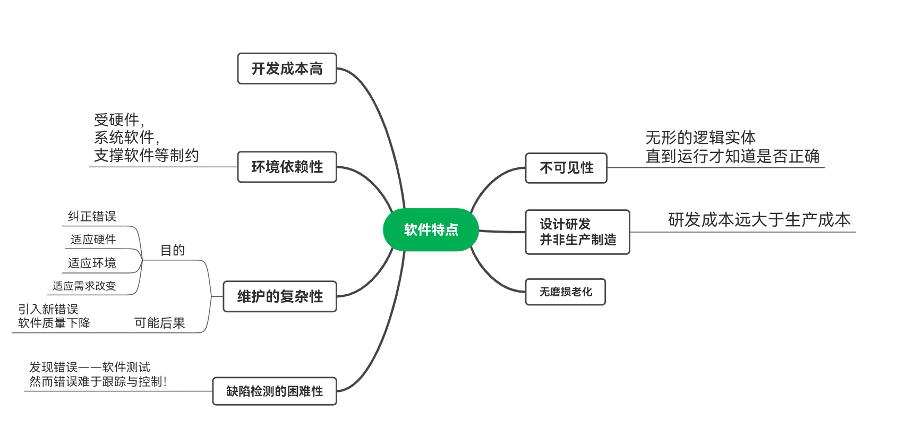

打个招呼吧！
Definition
Programs and their documents in a computer system ( programs , data , documents). Software can be thought of as a program system or a collection of programs。 A program is a description of the processing object and processing rules for calculating a task。 The documentation is intended to facilitate the understanding of the clarifying information required by the program。
Feature
Classification and Function
Operating system controls the access of hardware by users.
Application programs use the computer hardware to solve users’ problems.
Popular operating systems
(1) Windows 2000
(2) UNIX
An established operating system, in the development process split into commercial Unix and BSD two categories, commercial Unix systems have Oracle Solaris, IBM AIX, HP-UX and so on, BSD systems and four BSDs: FreeBSD, OpenBSD, NetBSD,DragonFlyBSD,these four BSD systems are open source. But these are not the systems that home users will encounter.
(3) Linux
An open source operating system that has long competed with Windows systems and has been very successful in the server space, but has not been successful in desktop and laptop use by the average home user. However, with Android's popularity on the mobile side, Linux has successfully reached thousands of households and is no longer just a developer, geek tool.